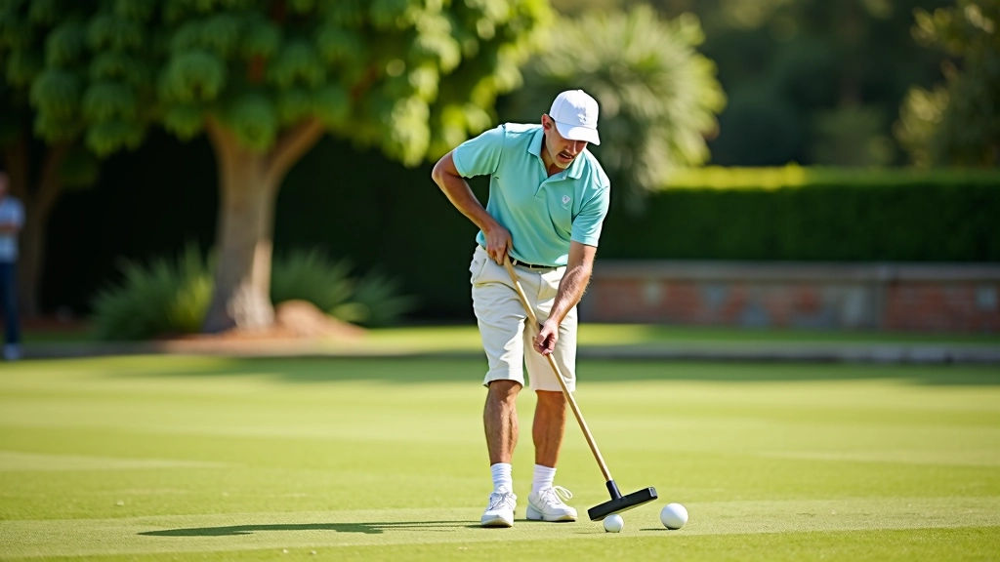
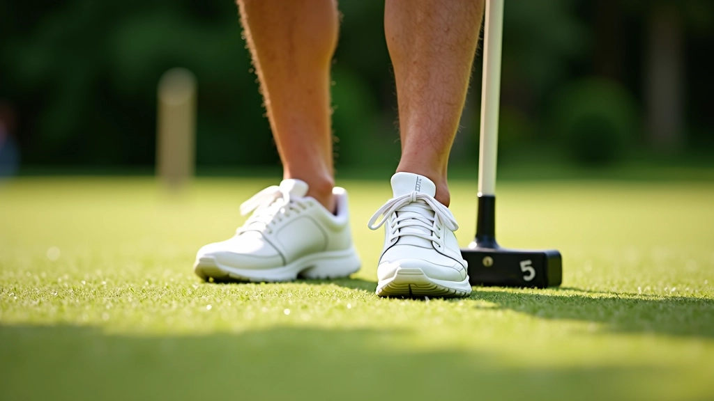
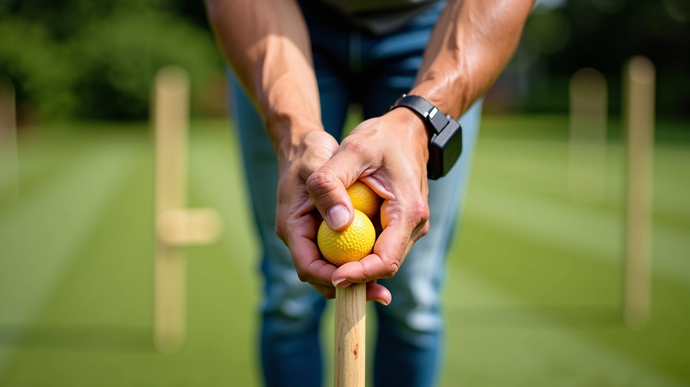
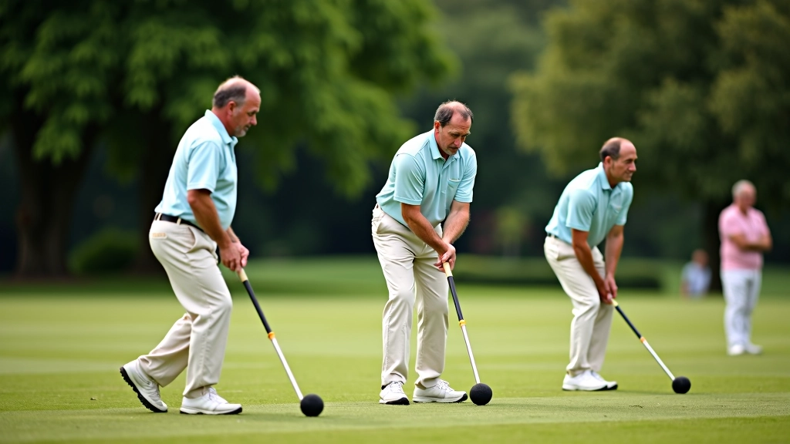
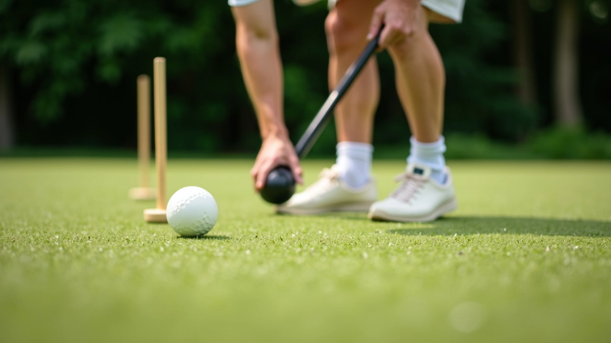

إتقان تقنية التقشير الأساسية
خطوات عملية لتعلم حركة التقشير بشكل صحيح، من الوقفة الأساسية إلى التحكم بقوة الضربة


ما هي تقنية التقشير؟
تقنية التقشير هي إحدى أهم المهارات الأساسية في لعبة الكروكيه. وهي تتضمن ضربة يتم فيها إرسال كرة الخصم بعيداً عن الملعب بينما تبقى كرتك قريبة من الهدف. هذه الحركة تتطلب دقة عالية وتحكماً ممتازاً بقوة الضربة.
سواء كنت مبتدئاً أو تريد تحسين مهاراتك، فإن فهم الأساسيات يعتبر حجر الأساس. نحن هنا لنشرح لك كل خطوة بوضوح — من وضع القدمين إلى لحظة التلامس مع الكرة. بعد هذا الدليل، ستشعر بثقة أكبر عند تطبيق هذه التقنية.


خطوة واحدة: إتقان الوقفة الأساسية
الوقفة الصحيحة هي كل شيء. يجب أن تقف بقدماك متباعدتان بعرض الكتفين تقريباً، مع توزيع وزنك بالتساوي على كلا القدمين. اثنِ ركبتيك قليلاً — هذا يعطيك التوازن والاستقرار الذي تحتاجه.
وجهك يجب أن ينظر للأمام نحو الهدف، وليس نحو الكرة مباشرة. ارفع رأسك قليلاً. هذا يساعدك على رؤية الملعب كاملاً والتخطيط للحركة التالية. تذكر أن الوقفة الثابتة تعني ضربة ثابتة — لا تتسرع في هذه الخطوة.
نصيحة مهمة: ممارسة الوقفة الصحيحة يومياً لمدة 5 دقائق فقط ستحسن من مهاراتك بشكل ملحوظ في غضون أسبوعين.
خطوة اثنين: إمساك المضرب بشكل صحيح
الإمساك بالمضرب يتطلب توازناً بين القوة والمرونة. لا تمسك المضرب بقوة شديدة — هذا سيجعل ذراعك متيبسة وستفقد التحكم. بدلاً من ذلك، أمسك به بقوة معتدلة، كما لو كنت تمسك يد صديق.
يجب أن تكون يدك السفلى بالقرب من نهاية المضرب، بينما تكون يدك العليا أعلى قليلاً. هذا يعطيك الرافعة والتحكم الذي تحتاجه. تأكد من أن كلا يديك متجهتان نحو الهدف — لا تدر معصميك.
- لا تشد المضرب بقوة شديدة
- اليد السفلى تحت اليد العليا مباشرة
- حافظ على استقامة المعصمين
- اسمح لذراعيك بالاسترخاء

هذا الدليل يقدم معلومات تعليمية حول تقنيات الكروكيه الأساسية. النتائج الفردية قد تختلف بناءً على الممارسة والخبرة الشخصية. ننصح بطلب التوجيه من مدرب متخصص للحصول على ملاحظات مخصصة حول تقنيتك.

خطوة ثلاث: إتقان حركة الضربة
الآن يأتي الجزء المثير — الضربة الفعلية. ابدأ برفع المضرب للخلف بسلاسة، مع إبقاء ذراعيك مسترخيتين. المضرب يجب أن يتحرك في خط مستقيم — لا تدر يديك أو تثن المعصمين.
عندما تصل إلى أقصى ارتفاع، تنفس وركز. ثم انقل المضرب للأمام بقوة ثابتة. الهدف هو الاتصال النظيف مع الكرة — لا تحاول إضافة قوة زائدة في آخر لحظة. الطاقة يجب أن تأتي من حركتك السلسة، وليس من القوة المفاجئة.
بعد الاتصال بالكرة، اتركت المضرب يكمل حركته بشكل طبيعي. هذا يسمى "المتابعة" — إنها تعطيك التحكم والدقة. لا تتوقف فجأة بعد ضرب الكرة.
خطوة أربع: التحكم بقوة الضربة
هنا تكمن الحقيقة — التقشير لا يتعلق بضرب الكرة بقوة أكبر. بل يتعلق بالتحكم. يجب أن تعرف كم قوة تحتاج لإرسال كرة الخصم لمسافة معينة بينما تبقى كرتك في المكان الذي تريده.
ابدأ بضربات خفيفة. أرسل الكرة بضربة خفيفة جداً — فقط بما يكفي لتحريكها. لاحظ المسافة والاتجاه. ثم حاول مرة أخرى بقوة قليلة أكبر. هذه الممارسة ستعطيك الشعور بالقوة المناسبة.
ابدأ بضربات خفيفة جداً
لاحظ مسافة الكرة ودقتها
زيادة القوة تدريجياً بخطوات صغيرة
اعثر على التوازن بين القوة والدقة

الممارسة تصنع الكمال
الآن بعد أن تعرفت على الخطوات الأساسية، حان وقت الممارسة الفعلية. لا تتوقع أن تتقن التقنية في يوم واحد — هذه عملية تدريجية، وكل ممارسة تضيف قيمة.
التركيز على الدقة أولاً
قبل أن تفكر في القوة، تأكد من أن ضربتك دقيقة. ركز على ضرب الكرة بشكل نظيف ومستقيم. الدقة تأتي قبل القوة دائماً.
الممارسة المنتظمة
ممارسة 15-20 دقيقة يومياً أفضل من ممارسة 3 ساعات أسبوعياً واحد. تدريب منتظم يبني الذاكرة العضلية بشكل أفضل.
تدريب مع آخرين
لعب مع لاعبين آخرين يعطيك تجربة واقعية. كل لاعب له أسلوب مختلف — تعلم من أساليبهم وطور أسلوبك الخاص.
اطلب التعليقات
لا تتردد في طلب ملاحظات من لاعبين أكثر خبرة. آرائهم ستساعدك على تحديد النقاط التي تحتاج إلى تحسين.
الخطوات التالية
إتقان تقنية التقشير الأساسية يفتح لك باباً جديداً في لعبة الكروكيه. ستشعر بثقة أكبر عند تطبيق هذه المهارة في الألعاب الفعلية. تذكر أن كل لاعب متمكن بدأ بنفس الأساسيات التي تتعلمها الآن.
استمر في الممارسة، وكن صبوراً مع نفسك. النتيجة ستأتي — ليس بسرعة البرق، لكنها ستأتي. وعندما تضرب ضربة تقشير نظيفة وتراقب كرة الخصم تتحرك بينما تبقى كرتك في مكانها، ستشعر برضا لا يوصف.
هل تريد معرفة المزيد؟
اكتشف استراتيجيات متقدمة وتقنيات إضافية لتطوير مهاراتك أكثر.
اقرأ المزيد عن الاستراتيجيات المتقدمة